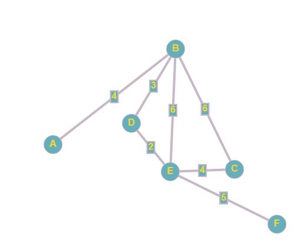

Основы теории графов
Граф — абстрактный математический объект, представляющий собой множество вершин графа и набор рёбер,
то есть соединений между парами вершин. Например, за множество вершин
можно взять множество аэропортов, обслуживаемых некоторой
авиакомпанией, а за множество рёбер взять регулярные рейсы этой
авиакомпании между городами.

Ориентированные и неориентированные графы
Графы, в которых все рёбра являются звеньями (порядок двух концов ребра графа не существенен), называются неориентированными.
Графы, в которых все рёбра являются дугами (порядок двух концов ребра
графа существенен), называются ориентированными графами или орграфами.
Неориентированный граф может быть представлен в виде ориентированного
графа, если каждое его звено заменить на две дуги, имеющие
противоположные направления.


Связный граф — граф, содержащий ровно одну компоненту связности. Это означает, что между любой парой вершин этого графа существует как минимум один путь.

Степень или валентность вершины графа — количество рёбер графа , инцидентных вершине . При подсчёте степени ребро-петля учитывается дважды. Степень вершины обычно обозначается как или . ... 1 максимальная степень равна 5, минимальная — 0.

Деревом называется связный граф без циклов (рисунок ниже). Любые две вершины дерева соединены лишь одним маршрутом.